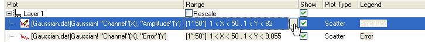

Anzeigebereich einer Zeichnung bearbeiten
PlotSetup-EditDisplayRange
Sie können den Anzeigebereich einer Zeichnung ändern, ohne den Anzeigebereich des Arbeitsblatts zu maskieren oder auf andere Weise zu ändern. Dies ist insbesondere dann nützlich, wenn Sie andere Diagramme in Ihrem Projekt haben, die die gleichen Arbeitsblattdaten verwenden. Indem Sie nur den Anzeigebereich der Zeichnung ändern, stellen Sie sicher, dass nur die entsprechende Zeichnung geändert wird.
Es gibt drei Möglichkeiten, um den Anzeigebereich der Datenzeichnung zu verändern: den Dialog Diagrammeinstellungen, den Dialog Layerinhalt und das Kontextmenü des Diagramms. Wir beginnen mit der Annahme, dass Sie ein Diagrammfenster mit einem oder mehreren Zeichnungen erstellt haben und Sie den Anzeigebereich von einer oder mehreren Zeichnungen ändern möchten.
Anzeigebereich im Dialog Diagrammeinstellungen festlegen
- Drücken Sie auf Alt und klicken Sie doppelt auf das Symbol Layer n in der linken oberen Ecke des Diagrammfensters. Der Dialog Diagrammeinstellungen wird geöffnet.
- Verwenden Sie die Schaltflächen, um alle drei Bedienfelder dieses Dialog zu öffnen.
- Markieren Sie das Quellarbeitsblatt des Diagrammfensters im oberen Bedienfeld.
- Klicken Sie auf die rechte Seite des aufgelisteten Bereichs der Zeichnung unter der Überschrift Bereich im unteren Bedienfeld. Dadurch wird eine Schaltfläche erzeugt, über die der Dialog Bereich geöffnet wird.
- 
- Deaktivieren Sie das Kontrollkästchen Automatisch (falls aktiviert) und bearbeiten Sie die Werte Von und Bis.
- Klicken Sie auf OK (im Dialog Bereich).
- Bearbeiten Sie ggf. den Bereich jedes Diagramms.
- Wenn Sie nicht möchten, dass die Diagrammachsen neu skaliert werden, um die Änderungen zu übernehmen, deaktivieren Sie das Kontrollkästchen Diagramm neu skalieren, um neue Zeichnungen anzuzeigen unter Bereich.
- Klicken Sie auf OK. Die Zeichnung wird mit den neuen Werten Von und Bis neu gezeichnet. Wenn Sie das Kontrollkästchen Neu skalieren aktiviert haben, werden die Achsen neu skaliert, um die Änderungen am Zeichnungsbereichs wiederzugeben.
| Hinweis: Nachdem Sie den Bereich für ein Diagramm benutzerdefiniert angepasst haben, können Sie den Bereich auf andere Diagramme in der/dem gleichen Gruppe/Layer/Seite durch Klicken mit der rechten Maustaste auf dieses Diagramm und der Auswahl von Bereich auf Gruppe anwenden/Bereich auf Layer anwenden/Bereich auf Seite anwenden anwenden. |
Anzeigebereich im Dialog Layerinhalt festlegen
- Aktivieren Sie das Diagramm und klicken Sie mit der rechten Maustaste auf das Symbol Layer in der linken oberen Ecke des Diagrammfensters.
- Wählen Sie Layerinhalt im Hauptmenü.
- Klicken Sie mit der rechten Maustaste auf das Layersymbol, um im Kontextmenü Inhalt Layer auszuwählen.
- Wechseln Sie im Listenfeld des Layerinhalts im rechten Bedienfeld zur die Spalte Bereich und klicken Sie auf die Schaltfläche ..., um den Dialog Bereich zu öffnen. Wenn der Bereich nicht angezeigt wird, klicken Sie mit der rechten Maustaste auf die Spaltenkopfzeile dieser Liste und aktivieren Sie im Kontextmenü die Option Bereich.
- Die folgenden Schritte zum Festlegen eines Bereichs sind identisch mit Schritt 5 bis 9 der Vorgehensweise beim Festlegen eines Bereich im Dialog Diagrammeinstellungen.
Anzeigebereich im Kontextmenü festlegen
- Klicken Sie bei aktiven Diagrammen auf die Zielzeichnung, um sie auszuwählen, dann mit der rechten Maustaste und wählen Sie Bereich bearbeiten im Kontextmenü. Der Dialog Bereich wird geöffnet.
- Klicken Sie auf Nach X (X muss monotonisch sein) oder Nach Index, deaktivieren Sie das Kontrollkästchen Auto für Von und Bis nach Bedarf und geben Sie dann die Werte ein. Klicken Sie auf Anwenden, um die Wirkung Ihrer Änderungen zu überprüfen, und dann auf OK, um den Dialog zu schließen.
 |
Standardmäßig bearbeiten Sie den Anzeigebereich für eine einzelne Zeichnung im Layer gleichzeitig. Wenn Sie jedoch vor dem Bearbeiten des Anzeigebereichs layer.commonrange=1 für den aktiven Diagrammlayer setzen, können Sie einen allgemeinen Anzeigebereich für alle Zeichnungen im Layer festlegen. Dazu bearbeiten Sie den Bereich für eine einzelne Zeichnung.
|
Anzeigebereich von 3D-Diagrammen festlegen
Öffnen Sie den Dialog Bereich, indem Sie mit der rechten Maustaste auf ein 3D-Diagramm klicken und Bereich bearbeiten auswählen.
- Matrix oder virtuelle Matrixdaten: Falls die Daten in beiden Dimensionen, X und Y, monotonisch sind, kann der Anwender den Bereich Nach Wert bearbeiten. Ansonsten begrenzen Sie das Bearbeiten des Bereichs auf die Zeilenindexwerte (Nach Index).
- XYZ-Daten: Falls die Daten monotonisch in der X-Dimension sind, wird das Bearbeiten des Bereichs nach X-Werten zugelassen (Nach X); falls sie monotonisch in der Y-Dimension sind, wird das Bearbeiten des Bereich nach Y-Werten ermöglicht (Nach Y). Ansonsten begrenzen Sie das Bearbeiten des Bereichs auf die Zeilenindexwerte (Nach Index).
- XYY-Daten: Falls die Daten in der X-Dimension monotonisch sind, wird das Bearbeiten des Bereichs nach X-Werten zugelassen (Nach X). Ansonsten begrenzen Sie das Bearbeiten des Bereichs auf die Zeilenindexwerte (Nach Index).